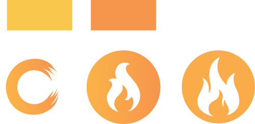
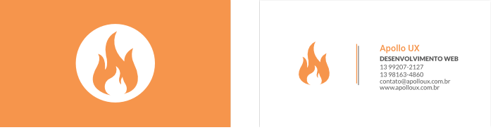
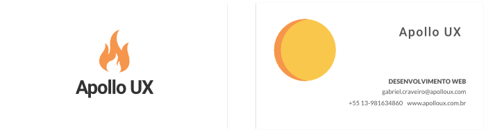
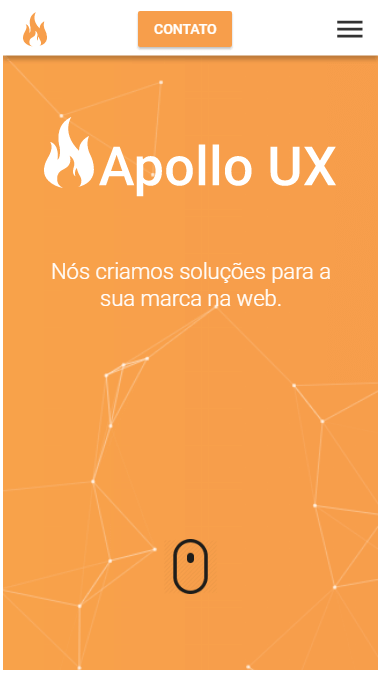

Apollo UX
Uma agência criada em Santos por amigos desenvolvedores
O mockup foi feito junto com Fernando Moreira e teve como
inspiração o deus grego Apollo, que protegia a arte, música
e o fogo. Toda a criação de logo, cartão, camisetas ficou em
meu encargo e também auxiliei no desenvolvimento da parte
mobile e da criação do portfolio no site.
Ferramentas Utilizadas
Fizemos todo o site na mão, utilizando desde bootstrap até várias
bibliotecas de javascript. Foi também focado em animações simples
que deixassem o site bem limpo.
Para a identidade visual usei toda a suit da Adobe.
Identidade Visual
Logo
Cartão
 Versão Mobile
Versão Desktop